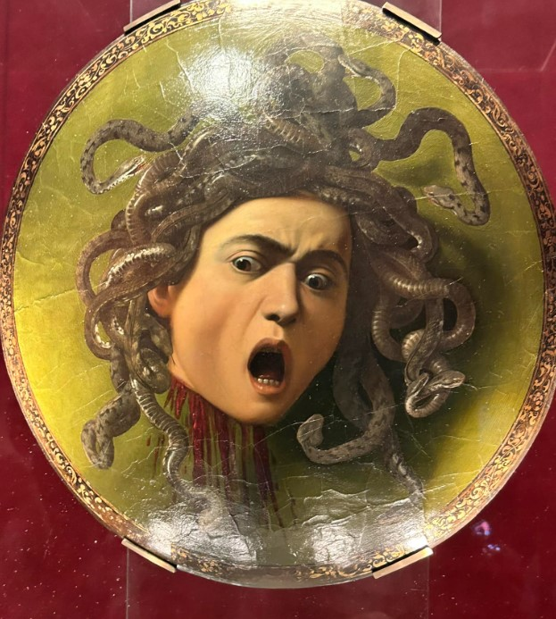
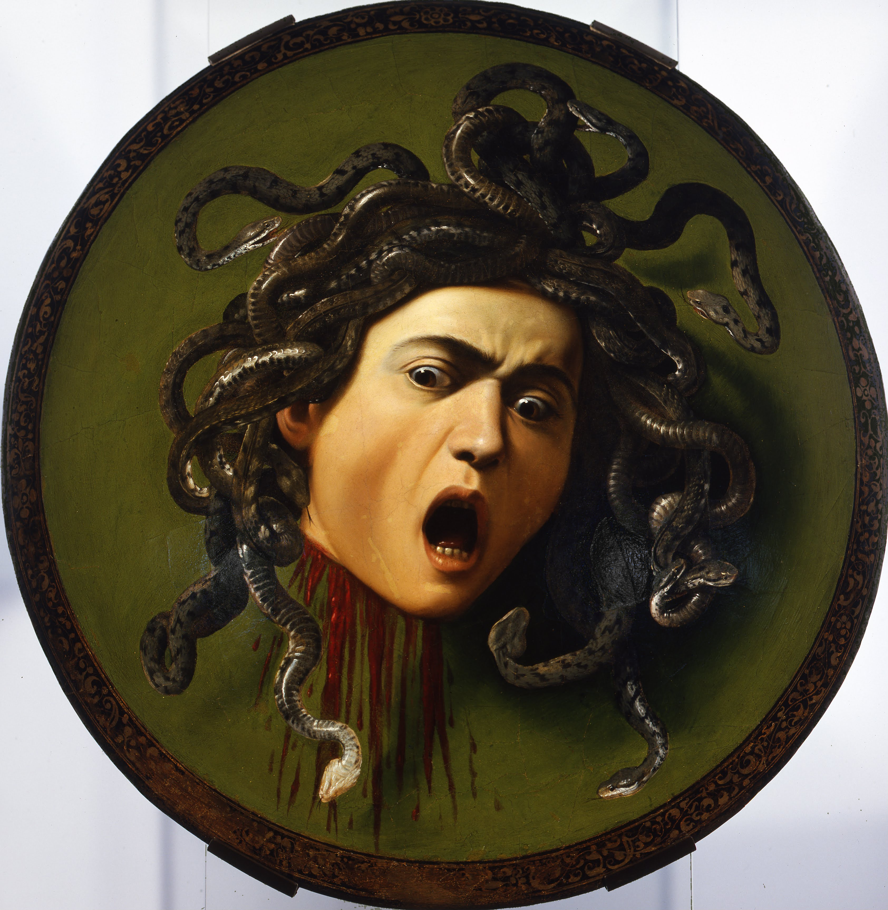
The answer.
LIGHT
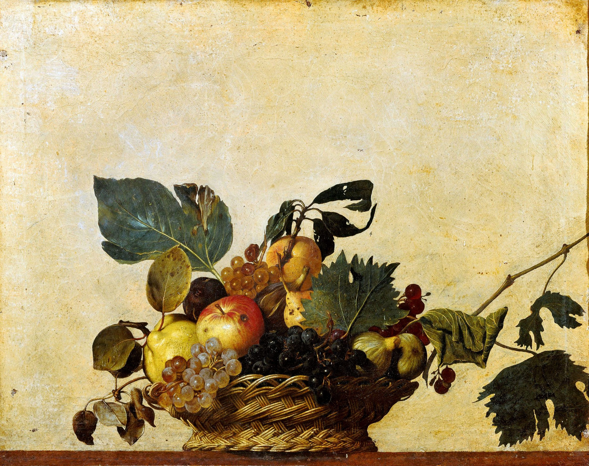
Until you want to reach out and push the basket back into the painting.
Every detail comes to life.
The impossible challenge.
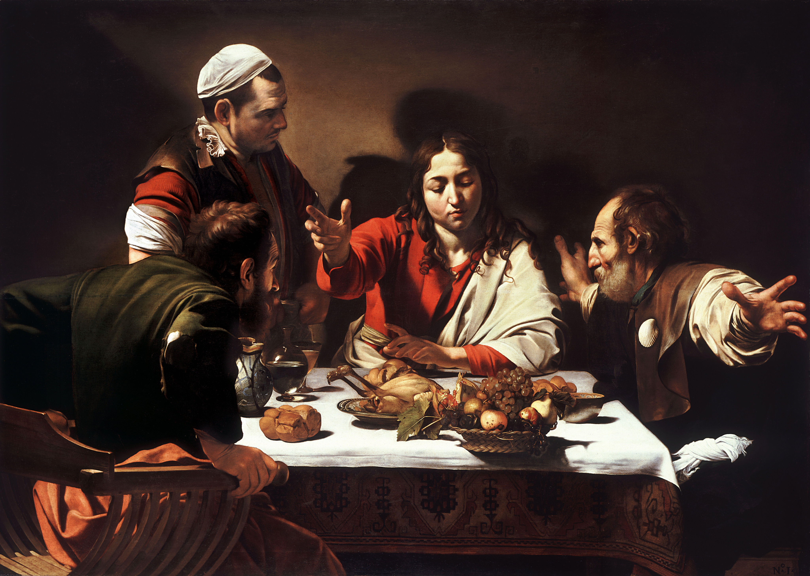
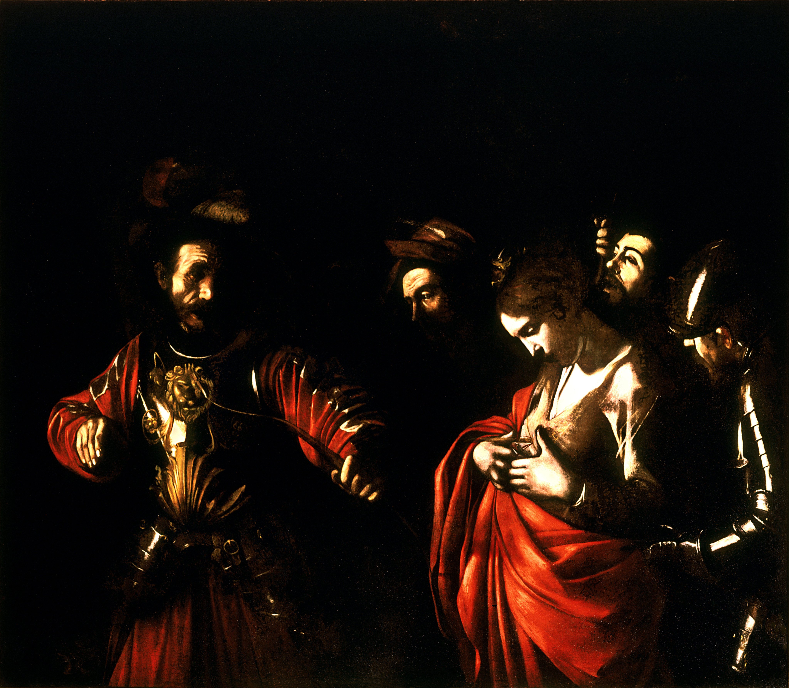
Behind her, he does more than witness the martyrdom: he seems to share in it.
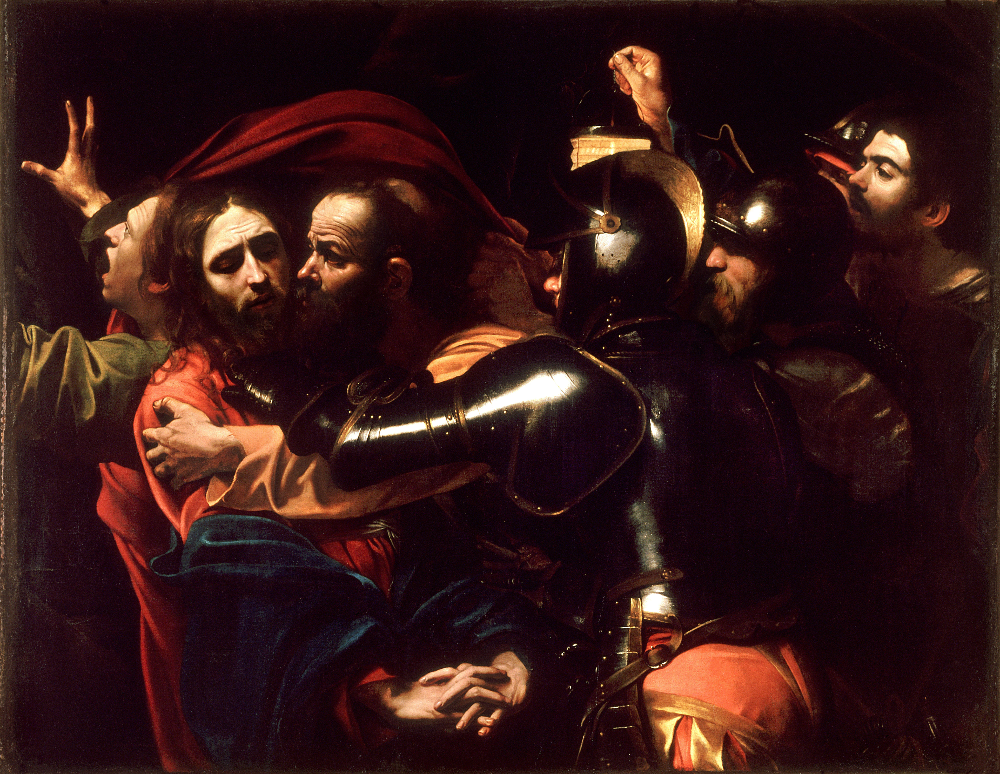
Perhaps this was how he imagined the looks of those who had witnessed his own arrests.
SHADOW
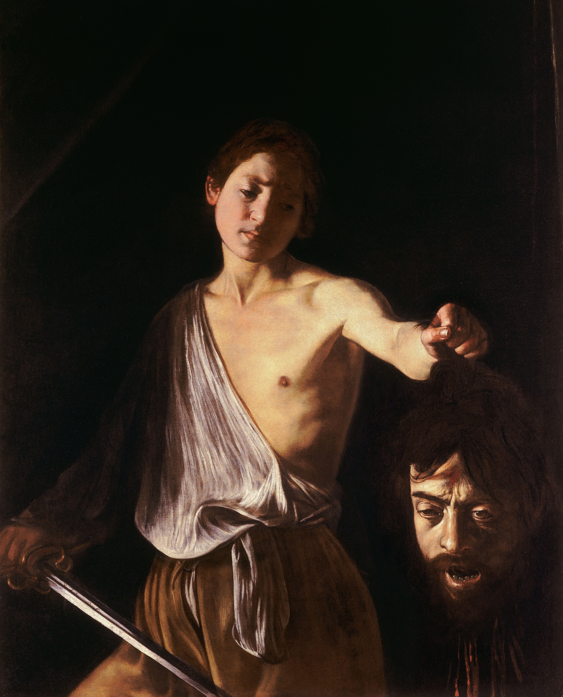
In Goliath, his own soul is reflected.
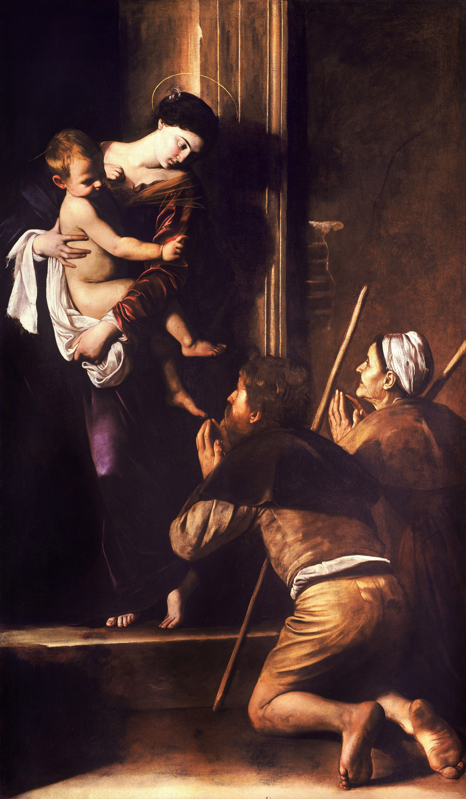
The scandal.
The reality that must not be shown.
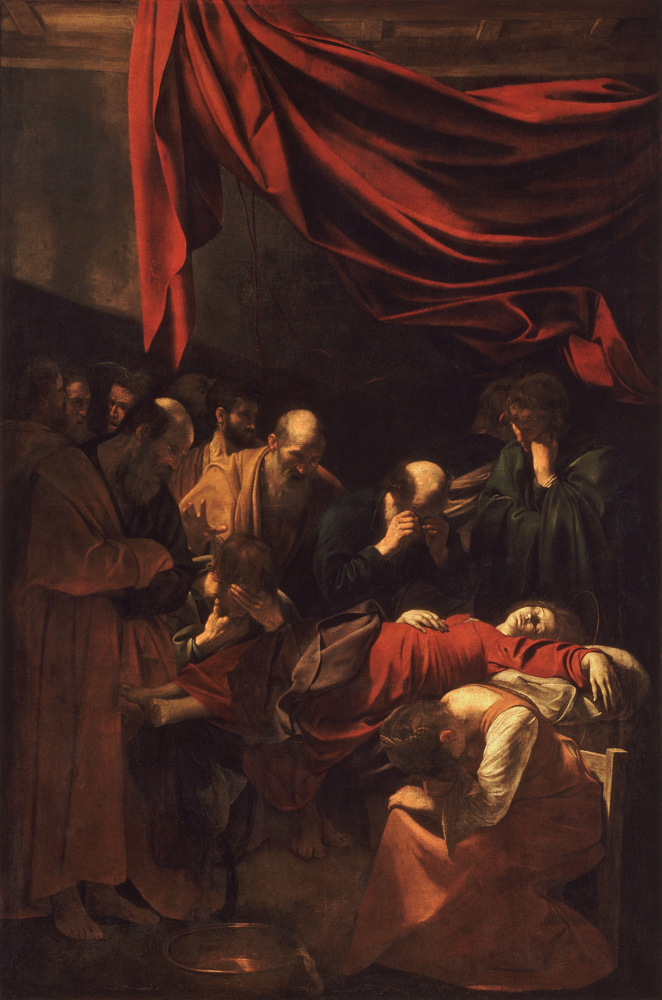
An unacceptable audacity.
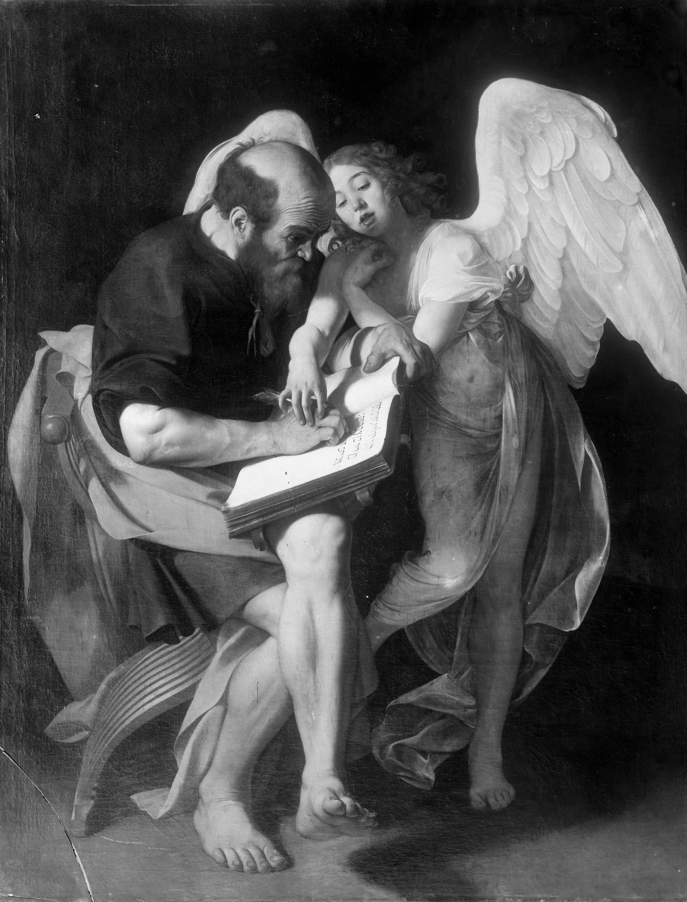
Incapable without divine guidance.
Another rejection.
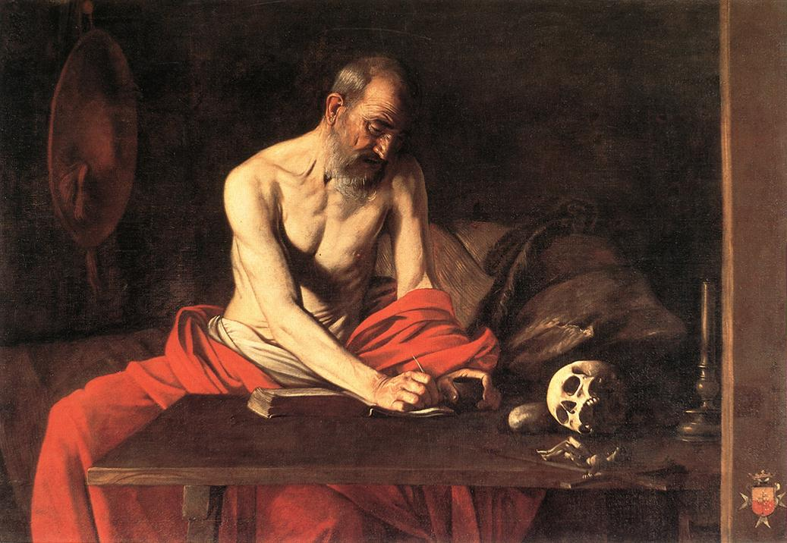
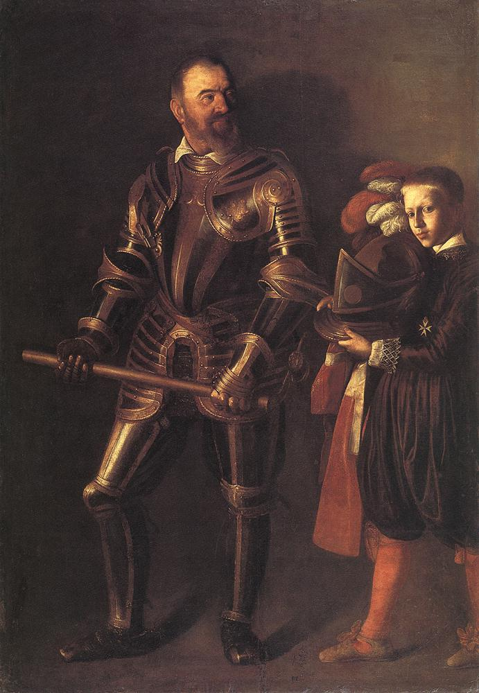
The Friend.
The Protector.
BLOOD
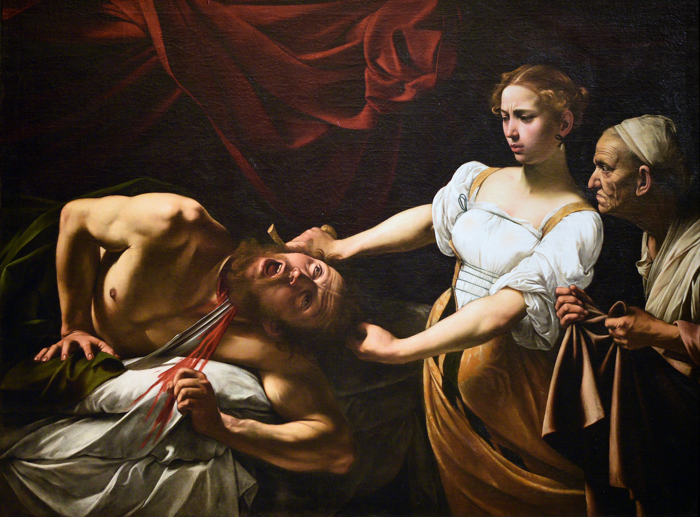
The instant of blood.
Executioner of the other.
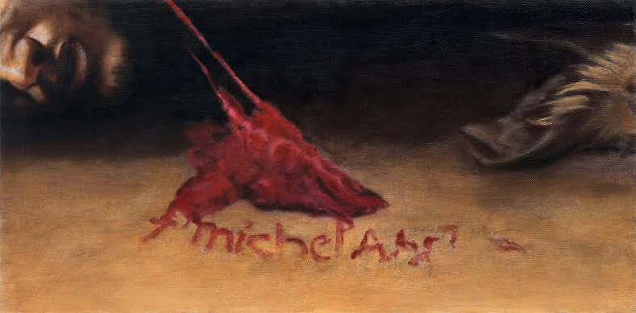
In blood.
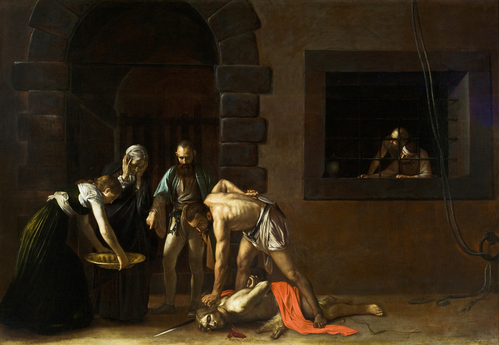
to end the suffering.